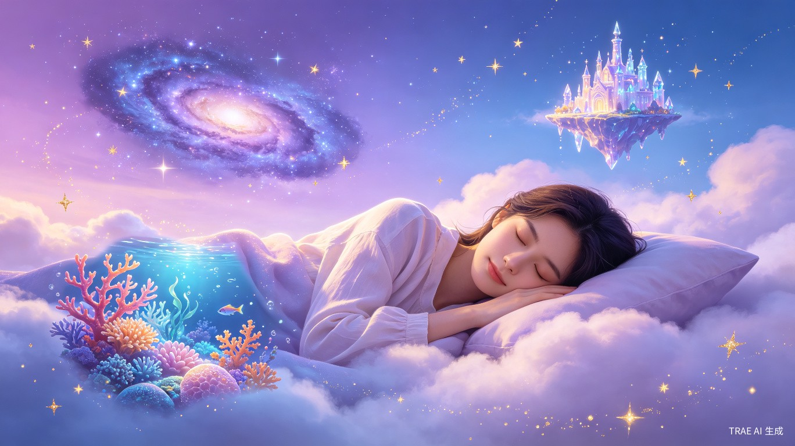
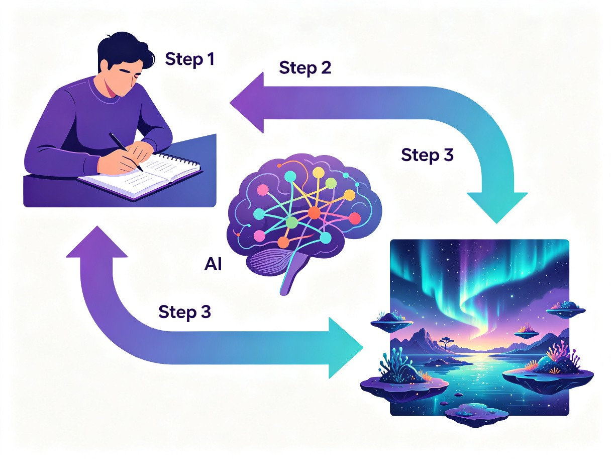
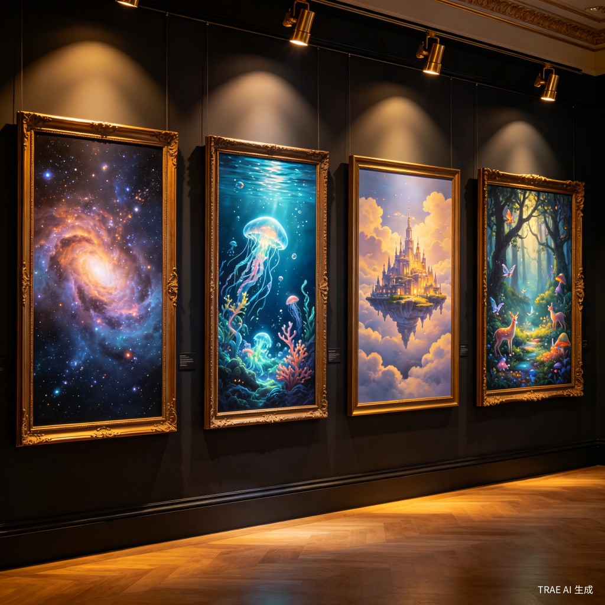
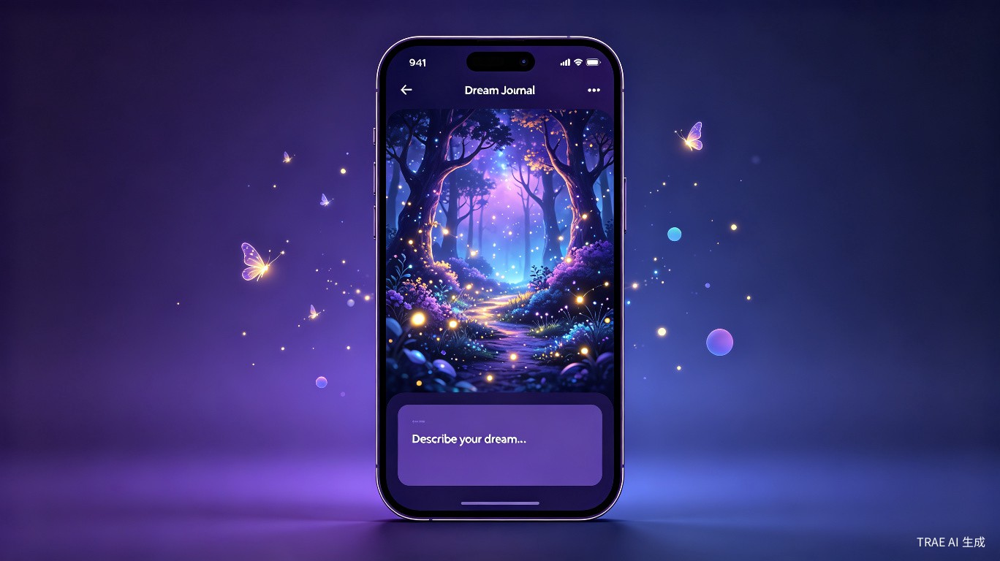

梦境画师 DreamPainter AI
将你转瞬即逝的梦境，化为永恒可见的艺术。用 AI 重新定义「梦的记录方式」——从文字到画面，从个体体验到共享画廊。

一、创意介绍
我们要解决什么问题？
每个人每晚都会做梦，但90% 的梦境在醒来后 5 分钟内就会被遗忘。传统的「记梦方式」只有文字日记——干瘪的文字很难还原梦境中那种光怪陆离、色彩斑斓的视觉体验。梦境是人类最丰富的想象力来源，却因为缺乏有效的记录工具，每天都在大量流失。
为什么会想到做这个？
灵感来自一个普遍体验：我们经常在醒来后激动地想跟朋友描述一个「超酷的梦」，但无论怎么用语言描述，对方都无法真正「看到」你梦里的画面。如果有一个工具，能把梦境的描述瞬间转化为可视化的艺术作品，不仅能保留珍贵的个人记忆，还能让梦境成为一种全新的社交和创作方式。
产品形态
梦境画师是一款基于 AI 图像生成技术的 Web 应用。用户只需用自然语言描述梦境的场景、色彩、情绪和关键元素，AI 就会在数秒内生成一幅高度还原梦境氛围的视觉艺术作品，并自动归档到个人「梦境画廊」，支持社交分享和社区互动。
二、目标用户及痛点
梦境记录爱好者
长期写梦境日记的用户，希望用更直观的方式保存和回顾梦境，从纯文字升级为「文字 + 视觉」双模态记录。
创意工作者
设计师、插画师、作家等创意从业者，将梦境作为灵感来源，需要快速将梦中的视觉意象转化为可参考的艺术素材。
社交分享用户
喜欢在社交平台分享生活日常的年轻用户，梦境是一种极具话题性和传播力的内容类型——「AI 画出了我的梦」自带社交货币属性。
心理学爱好者
对自我探索和潜意识分析感兴趣的用户，通过可视化梦境来辅助自我反思和心理觉察。
核心痛点
- 遗忘速度快：梦境记忆极其脆弱，醒来后几分钟内细节就开始模糊，传统文字记录速度跟不上遗忘速度。
- 文字描述能力有限：梦境中的超现实场景（如「我在一片紫色的海洋上飞翔，周围是会唱歌的水母」）很难用文字准确传达。
- 缺乏视觉记录工具：目前市面上没有专门针对「梦境可视化」的产品，通用 AI 绘图工具缺乏梦境场景的针对性优化。
- 梦境社交空白：梦境是一种高度个人化但又有强烈共鸣感的内容，目前缺乏一个让用户安全、有趣地分享和交流梦境的社区。
三、核心功能设计

智能梦境对话
用户只需像聊天一样描述梦境，AI 会通过引导式提问帮助补充细节——场景、色彩、情绪、人物，即使描述很模糊也能生成优质画面。
梦境风格引擎
内置多种梦境艺术风格：超现实主义、水彩梦幻、赛博朋克、油画质感、浮世绘等，让同一梦境可以呈现截然不同的视觉风格。
个人梦境画廊
所有生成的梦境画作自动归档，按时间线排列，支持标签分类和情绪标注，形成一本独特的「视觉梦境日记」。
梦境社交广场
用户可以选择公开梦境画作，浏览他人的梦境画廊，发现「竟然有人做了和我一样的梦」，建立基于梦境的社交连接。
梦境解析洞察
基于用户梦境记录的长期数据，提供趣味性的「梦境趋势分析」——你最常梦到的元素、色彩偏好、情绪图谱等。
语音极速记录
支持刚醒来时直接语音描述梦境，AI 自动转文字并生成画面，最大化在遗忘窗口期内完成记录。
四、典型使用场景

清晨记梦
早上醒来，打开 App 语音描述梦境，30 秒后获得一幅梦境画作，发到朋友圈获得大量点赞和评论。

灵感采集
设计师做了一个充满创意元素的梦，用梦境画师生成参考图，作为新项目的视觉灵感素材。
五、价值与意义
商业价值
梦境画师切入的是一个蓝海市场——目前没有专门的「梦境可视化」产品。通过「AI 生成 + 社交分享 + 个性画廊」的组合，可以构建强大的用户粘性和传播力。商业模式包括：基础功能免费 + 高级风格/高清导出付费 + 社交增值服务，具备清晰的变现路径。
社会价值
梦境是人类共通的情感体验。梦境画师不仅是一个工具，更是一个连接潜意识的桥梁。它让每个人都能以最直观的方式面对自己的内心世界，促进自我认知和心理健康。同时，梦境社交广场可以打破人与人之间的隔阂——当你发现陌生人竟然和你做了相似的梦，那种共鸣是其他社交产品无法提供的。
技术创新价值
梦境画师将推动 AI 图像生成技术在超现实场景理解和多模态情感表达方面的突破。梦境描述往往包含矛盾、跳跃、非逻辑的元素，这对 AI 的语义理解和创意生成能力提出了独特的挑战和机遇。
六、技术路线与实现计划
Phase 1：MVP 核心功能
实现文字描述 → AI 图像生成的核心链路，支持 3-5 种梦境艺术风格，基础的个人画廊功能。
Phase 2：智能交互升级
加入引导式梦境对话、语音输入、情绪标注等功能，提升用户体验和生成质量。
Phase 3：社交与社区
上线梦境社交广场，支持公开分享、评论互动、相似梦境推荐，构建社区生态。
Phase 4：深度洞察
推出梦境趋势分析、梦境日历、梦境相似度匹配等高级功能，打造完整的梦境生态平台。
七、总结
梦境画师 DreamPainter AI 是一款将 AI 图像生成技术与人类最神秘的体验——梦境——相结合的创新产品。它解决了一个真实且普遍的痛点（梦境遗忘），切入了一个空白市场（梦境可视化），同时具备商业可行性和社会价值。
我们相信，每个人的梦境都值得被看见。梦境画师将成为连接人类潜意识与数字世界的一扇窗，让梦境不再是醒来后模糊的记忆，而是可以被珍藏、分享和回味的视觉艺术。